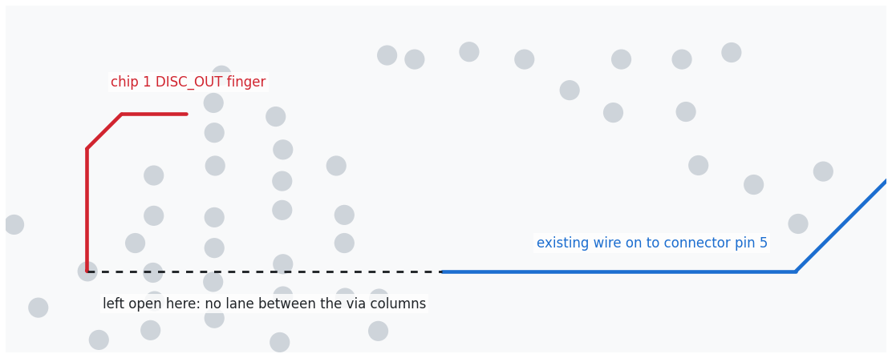
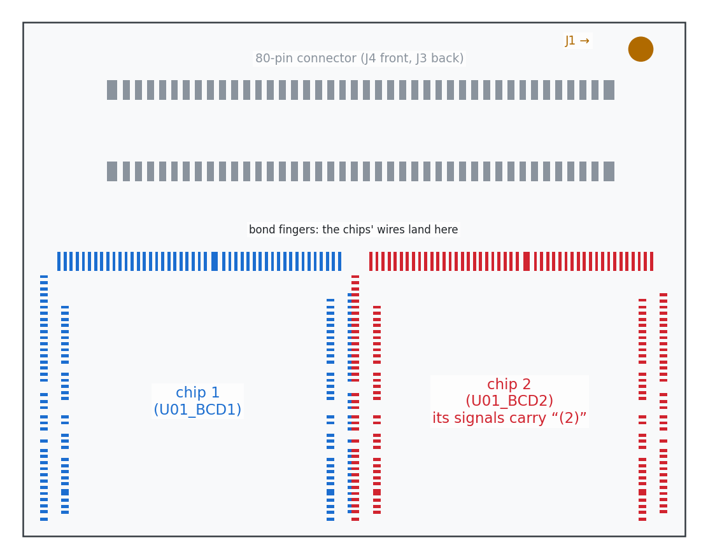
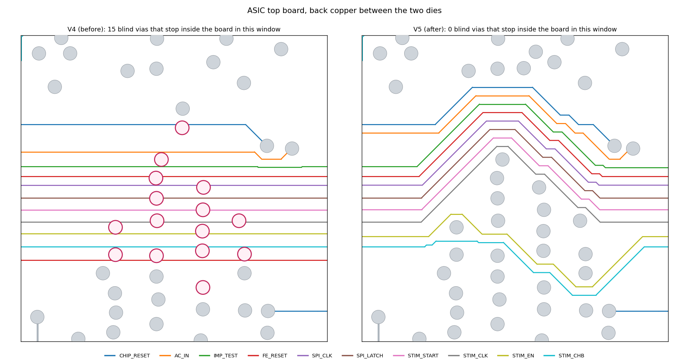
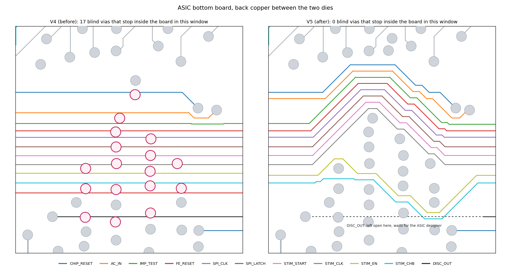
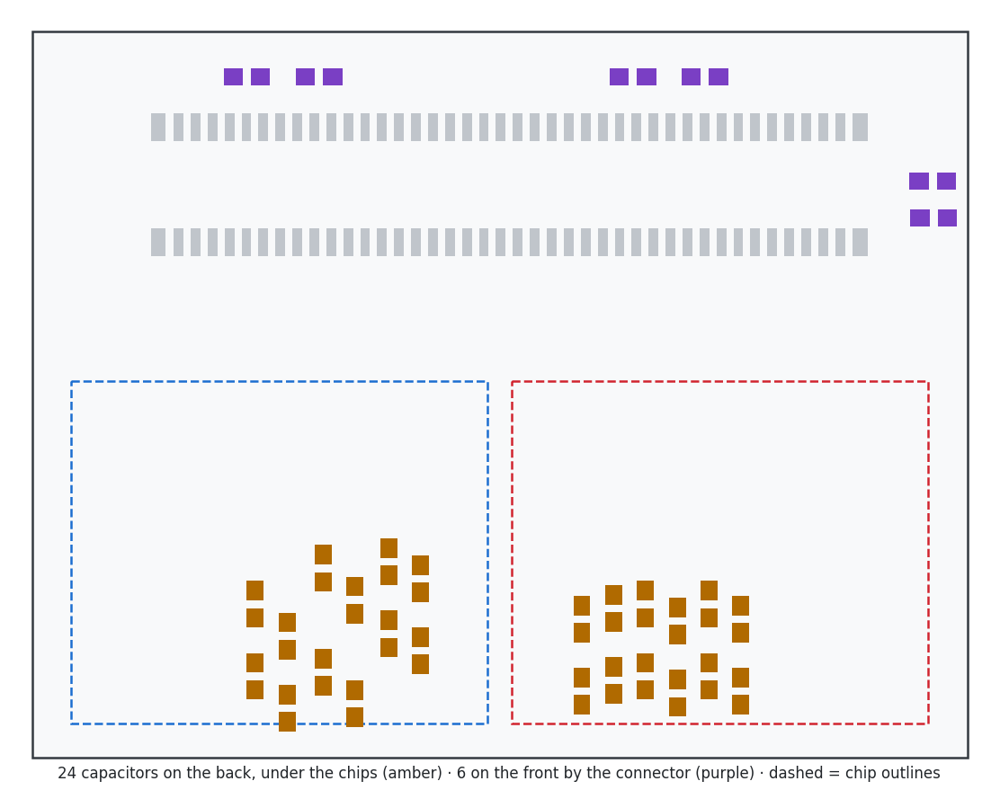
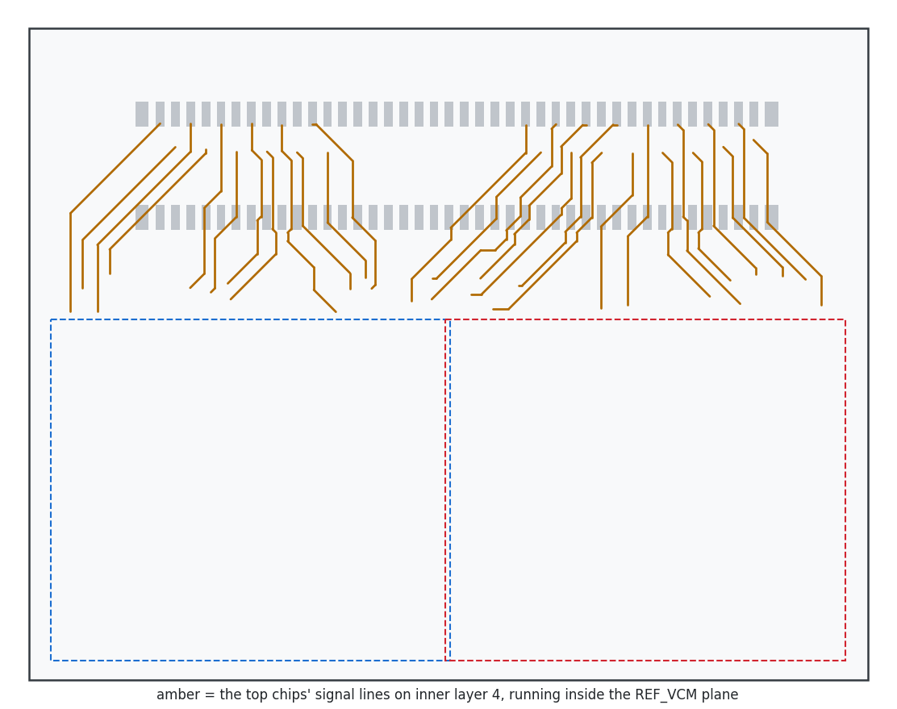
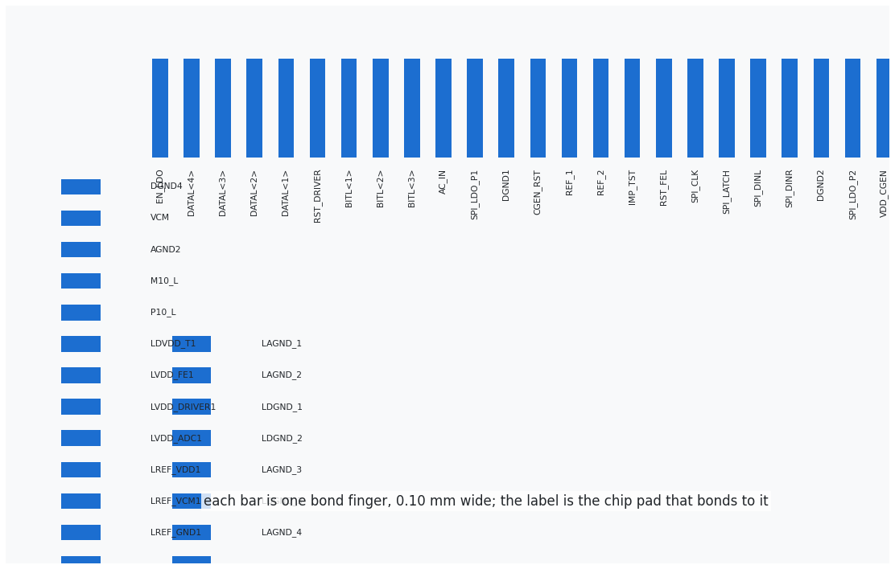

Questions for the ASIC designer
12 November 2026 · 35 questions, each with a figure · from design review V3 and the ASIC boards V5
We keep the designer's ASIC boards and pin order and redraw our FPGA-LDO and Frontend boards to match. These are the answers we need to finish the system. Item ids link to the review findings.
A. Pin order decides the FPGA-LDO and Frontend redraw
A1Is the 80-pin order of the new top and bottom boards final?
- Why: we will redraw two boards to match it. Any later change means redrawing again.
- Also confirm our reading: bottom-board chips on the odd pins, top-board chips on the even pins, supplies on pins 1 and 34-56, shared control on pins 49-55 and 65-71.
- Then: we freeze pin map V6. (AB-01)
bottom-board chips top-board chips shared control supplies and grounds
A2May the top chips share SPI_CLK and SPI_LATCH with the bottom chips, with SPI data kept separate?
- That is: tie pin 72 to pin 63 (clock) and pin 70 to pin 61 (latch).
- Why: yes cuts the new wires from 12 to 8 per head. The FPGA-LDO board has room for only 3-4 as drawn, so 8 is far easier than 12. It also leaves 7 spare contacts to the Frontend instead of 3.
- If no: does the top SPI clock (pin 72) need a pull-down like the latch? (AB-28, LDOA-49)
Pins 61 and 63: bottom board's SPI latch and clock. Pins 70 and 72: the top board's own pair. Tying 70 to 61 and 72 to 63 saves 4 wires per head (12 new wires become 8).
A3Is DISC_OUT needed from any chip?
- Today: the bottom chips' DISC_OUT is on pins 5 and 3. The top chips' DISC_OUT is not on the connector, because both boards used pins 3 and 5 and two chips would have driven one pin. Our FPGA-LDO board has no wire on pins 3 or 5.
- If it must be read: from which chips (2 or all 4 per port), and on which pins should the top chips' come out? This costs 2-4 contacts per port and the bottom ASIC board needs a further change, because DISC_OUT has no lane across the gap between the chips.
- If it is not read: tie it to ground, or leave it open?
- Then: we either route it or drop it, and close the open connection on the bottom board. (R2S-07, AB-22, SYS-63)
Pins 3 and 5 carry the bottom chips' DISC_OUT. The top chips' DISC_OUT has no pin.

Bottom ASIC board V5, between the two chips: DISC_OUT has no lane across the via columns.
A4If DISC_OUT is not needed, may pins 3 and 5 become ground pins?
Grey: the only four ground pins (42, 44 AGND; 46, 48 DGND), all in the middle. Red: pin 2, the top chips' READ, 8 mm from the nearest ground. Amber: pins 3 and 5, which could become grounds if DISC_OUT is dropped.
A5What drives CLKH (pin 7) and VDD_CGEN (pin 1)?
- CLKH: frequency, and should it come from the FPGA? VDD_CGEN: voltage and current.
- Then: we check our FPGA-LDO board supplies both correctly.
Pin 1: VDD_CGEN (your sheet: 1.5 V, under 100 µA). Pin 7: CLKH, the clock into all four chips.
A6Chip and data naming.
- Which chip on each board is "(2)" (U01_BCD2, the right-hand one)?
- Is D<1> or D<8> the first bit, and what do READ and SYNC mean in time?
- On which edge of the returned 32 MHz clock is the data valid, and what setup and hold does it have?
- Then: we write the FPGA pin file and capture logic.

Sketch only: the order of the data bits and the timing of READ and SYNC against the returned clock are what we need.
A7Which files were the existing ASIC boards made from, and has anything from the new pair been ordered?
- Why: the only Gerber set we hold is an older one-chip design. (SYS-44)
| Top-chip signal | PCB-5 pin | New pair pin |
|---|---|---|
| Chip 2 READ | 10 | 2 |
| Chip 2 Data 8-5 | 12-18 | 4-10 |
| Chip 2 clock, SYNC | 20, 22 | 12, 14 |
| Chip 2 SPI data | none | 16, 18 |
| Chip 2 Data 4-1 | 26-32 | 20-26 |
| Chip 1 READ | 60 | 28 |
| Chip 1 Data 8-5 | 62-68 | 30, 32, 58, 60 |
| Chip 1 clock, SYNC | 70, 72 | 62, 64 |
| Chip 1 SPI data | none | 66, 68 |
| Top SPI latch, clock | none | 70, 72 |
| Chip 1 Data 4-1 | 74-80 | 74-80 |
Our FPGA-LDO and Frontend boards follow the PCB-5 column.
B. Power and grounds decides the FPGA-LDO power design
B1What power-up and power-down order do the rails need?
- Today all rails come up whenever the cable is live, the ±10 V last, about 0.25-0.5 s after the rest. Nothing lets the FPGA switch or watch them.
- Which states with only some rails on are allowed? May ±10 V stay on while the 1.5 V rails are off?
- If an order is required: we add an enable line and a power-good line (2 spare contacts) and bleed resistors on ±10 V. If not: nothing to add. (SYS-10, SYS-50, LDOA-28, LDOB-49)
Today: every rail comes up as soon as the cable is live; nothing lets the FPGA switch or watch them.
B3Are AGND and DGND joined on the chip? Which ground should each rail return to?
- Today: the two grounds never meet on the ASIC boards; they meet only on our FPGA-LDO board. DVDD and VDD_ADC return to the opposite ground from the one the ASIC board decouples them to.
- May we put a few AGND-DGND capacitors near the connector?
- Then: one ground on the FPGA-LDO board (simpler, our preference) or two with a single tie point. This must be fixed before any copper. (AB-17, LDOA-16, LDOA-11)
B4What is the absolute maximum of VDD10 and VSS10?
The same question applies to VSS10 at −10 V.
B6Does the DVDD "IO" current figure include the board wiring load?
- Why: with real wiring we estimate 5-6 mA per board, against 1.39 mA in your sheet. Please also confirm the current of each rail. (SYS-81)
Per ASIC board, from your power budget (17 µW per channel). VDD10 and VSS10: 2 mA maximum each.
C. Control lines and start-up behaviour
C1Reset polarity and safe idle state of every input.
- CHIP_RESET, FE_RESET, STIM_EN, STIM_START, STIM_CLK, STIM_CHB, IMP_TEST, AC_IN, SPI clock, latch and data, CLKH.
- Then: we set the pull resistors and the FPGA's power-up states. (SYS-28)
| Input | Active level | Safe idle state |
|---|---|---|
| CHIP_RESET | ? | ? |
| FE_RESET | ? | ? |
| STIM_EN | ? | ? |
| STIM_START | ? | ? |
| STIM_CLK | ? | ? |
| STIM_CHB | ? | ? |
| IMP_TEST | ? | ? |
| AC_IN | ? | ? |
| SPI clock / latch / data | ? | ? |
| CLKH | ? | ? |
C2Do these pads have internal pull resistors?
C3What do the stimulation registers hold after power-up and after CHIP_RESET?
- Does an all-zero L/R stream turn every stimulator off?
- Then: firmware loads an all-off table into all eight chips before STIM_EN is ever raised. (SYS-60)
C4Must CLKH be stopped while SPI is loaded and during resets? May tables be reloaded while recording?
- Why: the start-up order we were given loads SPI before CLKH starts, but the only working firmware on record ran CLKH all the time. (SYS-76)
C5Input thresholds and hysteresis of STIM_EN, STIM_START, STIM_CLK, CLKH and SPI_CLK. Does START act on an edge or a level?
We estimate 0.6-1.1 V of ground bounce on the quiet STIM lines when 10-14 outputs switch together, so the threshold and hysteresis matter.
D. Electrical numbers can follow by email
D3Input capacitance and leakage per pad.
One FPGA pin drives up to 16 chip pads on the shared lines. (AB-40)
E. The ASIC boards themselves
E1Do you accept the changes in V5?
Show both boards in KiCad.
- More vias on the connector power pins, so every supply and ground pin has at least two (your request).
- The ten shared control wires on the back re-drawn between the chips, so all 20 (top) / 22 (bottom) deep blind vias are through vias.
- FE_RESET: one of its two crossings removed; chip 2's two FE_RESET fingers tied together under chip 2, as chip 1's already were.
- One DGND via removed, one moved north with a second beside it; chip 2's CHIP_RESET via 0.12 mm east; one VDD10 via 0.10 mm west.
- Top board: DISC_OUT cut from pins 3 and 5 (see A3).


Pink rings (left): vias that stopped inside the board and could not be made. Right: the ten control wires re-drawn so every via goes straight through.
E2Capacitor values.
- Value, voltage rating and part number for all 30 positions. We suggest at least 16 V, and 25 V on the four ±10 V capacitors.
- Height limit: the upper board's capacitors leave only 1.00 mm above the lower board's chips.
- Is a VDD_CGEN capacitor needed beside chip 1? Its nearest one is 15.5 mm away. (AB-18, AB-23, AB-06)

E3Top board: the 28 chip lines on inner layer 4 run inside the REF_VCM plane.
- They couple about 5-6 pF into REF_VDD and the driver supplies. Leave as drawn and measure, add ground layers around them, or move them next to DGND? (AB-16)

E4Board thickness: 1.6 mm as in the files, or 0.8 mm?
- 1.6 mm gives a stack about 17 mm tall and a flatter board; 0.8 mm brings the probe rows closer. (AB-08)
E5Who made the June board, and with what finish and gold thickness?
Who should make this one?
119 front-to-first-layer laser vias per board; fabricators' published rules ask for the larger pad.
E6J1 and the two board types.
J1 is the single AGND pin at the top right corner. Both board types have the same outline and connector.
E7Exact part number and height of the J3 / J4 connectors.
The pads also fit taller parts that would change the stack. (SYS-30)
F. Chips and bonding
F2Potential of the chip's back side, and the die-attach material used in June.
Each chip sits over 12 covered rail vias. (AB-10)
F3A one-page bond diagram for this board.

Top left corner of chip 1 on the board. A bond diagram tells the bonder which chip pad goes to which finger.
F5Who bonds the boards?
The 0.1016 mm fingers are narrower than two published guides and the shared fingers take two bonds each, so the bonder should confirm. (AB-13)
The fingers are 0.10 mm wide, narrower than two published guides; the 33 middle fingers take a bond from each chip.
| Chip pad | Type |
|---|---|
| D<1> … D<8>, READ, SYNC, CLK32MHZ | output ? |
| SPI_DINL, SPI_DINR, SPI_CLK, SPI_LATCH | input ? |
| STIM_*, resets, AC_IN, IMP_TEST, CLKH | input ? |
| BIT pads (6 per chip), CGEN_BK | ? |
After the meeting what each answer starts
| Answers | Work it starts |
|---|---|
| A1, A2, A3, A4 | Freeze the pin order; plan the 8 or 12 new wires on the FPGA-LDO and Frontend boards; write the new FPGA pin file |
| B1, B3 | FPGA-LDO board power and ground first: one ground or two, enable and power-good or not |
| B4, B5, B6 | Set the ±10 V level, the REF_VCM load and the rail budget |
| C1, C2 | Pull resistors on the FPGA-LDO board and, if allowed, on the ASIC boards |
| C3, C4, C5, D1-D4, A6 | Firmware rules and the signal checks |
| A3, E1, E2, E3, E4 | Finish the ASIC boards: DISC_OUT, capacitor values, thickness |
| E5, F1-F6 | Bonding drawing and the fabricator and bonding-house questions |
Board figures are drawn from the ASIC boards V5 files; pin figures from the pin trace of 11 Nov 2026; the other figures are sketches of what each question is about, not measurements.